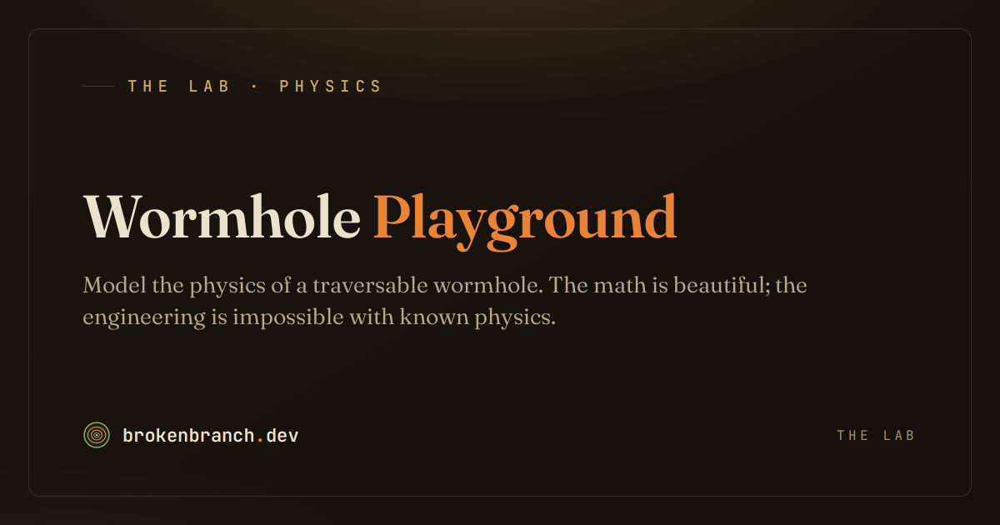

The Lab · Wormhole
Model a wormhole.
The Morris–Thorne metric, particles crossing the throat, waves bending in curved space—and the exotic-matter wall that ruins the engineering.
Live instrument preview · actual RK4 geodesics · self-tests run on load

Enter the live instrument →Picture the shortcut: a wormhole is a hypothetical shortcut between two far-apart places in space — a tunnel through the universe. This page doesn't draw a sci-fi picture; it runs the real equations to ask whether one could actually exist. The verdict: the math is self-consistent. You can describe a stable tunnel on paper. But propping it open needs a kind of “exotic matter” with negative energy that, as far as anyone knows, can't be made. For a metre-wide throat the shortfall is about 46 orders of magnitude.
A geometry playground with hard limits
Inside the simulator
- An implementation of the Morris–Thorne / Ellis metric that self-tests against the flat-space and photon-orbit limits on load
- A geodesic solver that sends particles through the throat
- A curved-space wave equation you can watch in real time
- A map of where the physics breaks
Outside the claim
- A claim that wormholes can be built
- A source of exotic matter or negative energy
- A topology-change mechanism (that needs new physics)
- Peer-reviewed, or pretending to be
What the simulator found
| Result | Verdict | What it means |
|---|---|---|
| Geodesic traversal | ✅ Works | Particles cross cleanly for zero angular momentum. |
| Angular-momentum filtering | ✅ Robust | m=0 waves pass; higher-m modes reflect off a centrifugal barrier at the throat. Pure geometry. |
| Stability | ⚠️ Conditional | Stable configurations exist only while exotic matter is continuously sustained. Remove it, it collapses. |
| Formation from flat space | ❌ Impossible | Exotic matter can deform spacetime but cannot change its topology. Classically, you cannot create one. |
| Exotic-matter budget | ❌ 46-order gap | A 1 m throat needs ~5×10²⁵ kg/m³ of negative energy density (≈5×10⁴² J/m³). The Casimir effect offers ~4×10⁻⁴ J/m³. |
A sibling result, corrected
From the runs